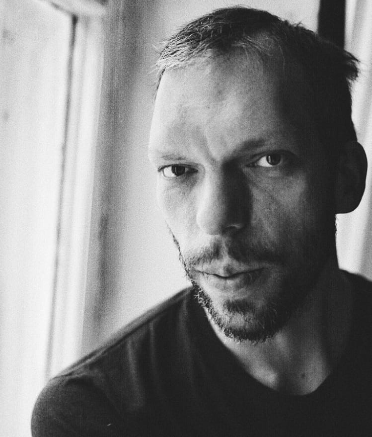

Cinematographer and documentary filmmaker based in Buenos Aires, Argentina.
Graduated from the Belarusian State University, Faculty of Journalism in Minsk. Studied cinematography at the Moscow School of New Cinema.
Worked on projects in Argentina, Mexico, the US, Thailand, India, Kenya, Malawi, Germany, Georgia, Turkey, Russia, and Belarus.
Solid experience working on expeditions in remote, hard-to-reach places.
Naturally gravitate toward raw, real-life human stories. Trying to capture reality as truthfully as possible, without interrupting the natural flow of events.
Available worldwide.